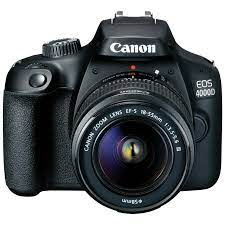

Сегодня в д.Оденцово в заброшенном доме было найдено 10 трупов.
На следующий день их хотели вывезти, но они пропали.
У него было окровавленно лицо, и у него в руках был окровавленный полицейский(который приехал первый на вызов).
одна из фотографий была найдена около заброшки на фотоаппарате canon.

перейдите по этой фотографии, там будет история
фото фотоаппарата
 последнее фото заброшки
последнее фото заброшки